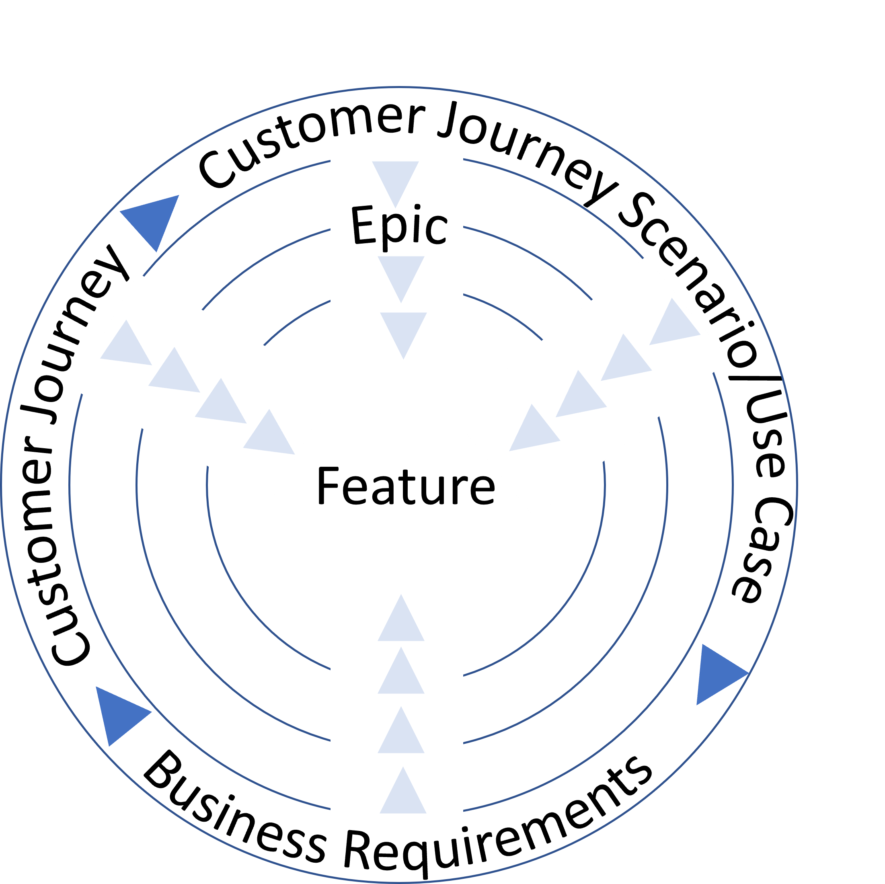
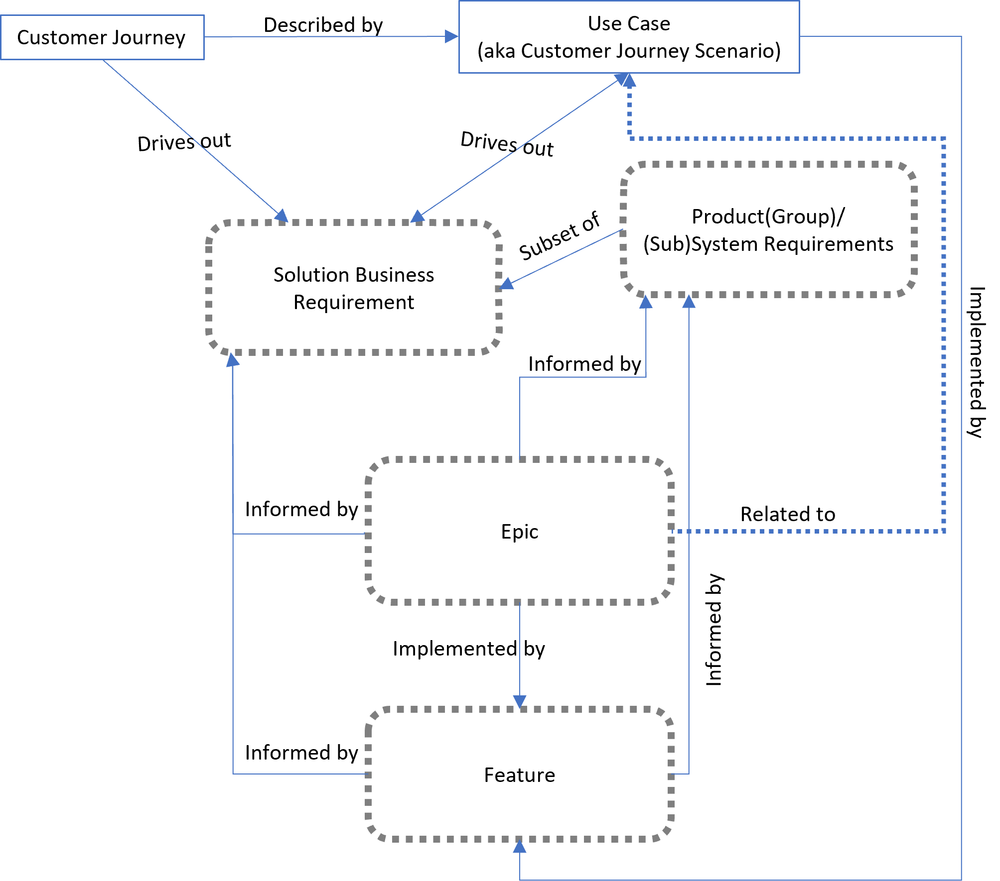
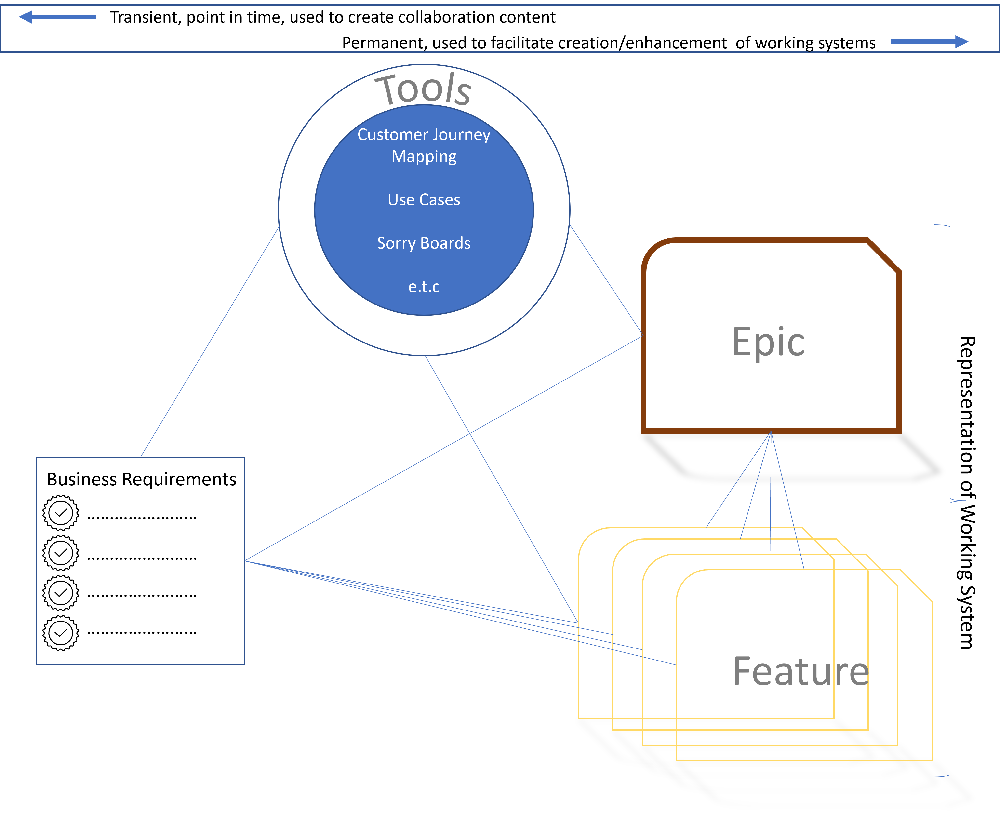

Overview
Last updated/Quality Checked, May, 2022
Working software Over Comprehensive documentation
Documenting requirements is important. However the degree to which we go and when and how we drive out those requirements is key to being set up for successful delivery.
For example a set of Use Cases that broadly covers end-to-end delivery with associated Epics and Features whereby the Epic and Feature elaboration depends on where on the roadmap timeline they fit.
Model
Last updated/Quality Checked, August, 2022
The requirements model exists primarily to facilitate building the backlog of, primarily, Epics and Features. At its most basic it consists of:
-
Driving out Business Requirements - Using the best industry standard tools like Customer Journeys
-
Creating items that reflect delivery of business outcomes/value - Epics, Features and Stories
-
Creating items that allow/encourage conversation and alignment on flow of value with customers - Use Cases


Whatever entities you adopt, it is important to use a consistent language with your stakeholders when you are
-
Describing Scope - The degree to how much upfront scope and the level it's described at will depend on the maturity of your customers/stakeholders
-
Describing delivery of Value - The value that will be delivered in Delivery Cycles
These backlog model items should also lend themselves naturally to describing the working software/(sub)system so that extensibility and maintainability are ensured

Measuring and Traceability
Last updated/Quality Checked, May, 2022
The Feature is the item to which all other items should be traced or reflected in. This can be done in, preferably, a work management tool, in a content management tool, assuming some automation is built in, or in more traditional spreadsheet matrices.
Upstream
-
The Customer Journey a Feature belongs to - if using customer journeys as a tool to understand customer needs
-
The Use Case the Feature relates to - depending on the level it is written at, use case could equate to feature
-
The Epic the Feature is a child of
-
The Capability the Feature is a part of - This is less commonly used as it is effectively a Feature that crosses Delivery units that is committed to in the same Delivery Cycle
At Feature Level
-
The Business Value
-
The Acceptance Criteria
-
The Feature Functional Level Design Details
Downstream
-
The Stories that Deliver the Feature
-
The Tests that Verify the Feature
-
The Defects that challenge the Feature
In a customer centric environment, Requirements gathering is really about figuring out, what things does the customer need
When applying metrics to Requirements, what we are really focused on is the Feature as the vehicle that to drive whether we are gathering and delivering the right things.
| Functionality |
Delivery Cycle (DC) 1 |
DC 2 |
DC 3 |
| # Features Planned v Accepted |
|
|
|
| % Features Accepted |
|
|
|
| Quality |
DC 1 |
DC 2 |
DC 3 |
| Open Defects at time of Release - related to requirements |
|
|
|
| Defects Opened related to Release - related to requirements |
|
|
|
Note: It is possible that further breakdown on internal v customer might give more value however the true measure of quality is combined
In Your Framework
Last updated/Quality Checked, May, 2022
Define and make use of the entities that make sense. Remember all organisations need backlogs to get from ideation to end state value but dont assume everything id a backlog items. Some items are just tools used to create backlog items e.g. Customer Journeys used to understand a customers Business Requirements.
Helpful Resources
Last updated/Quality Checked, May, 2022